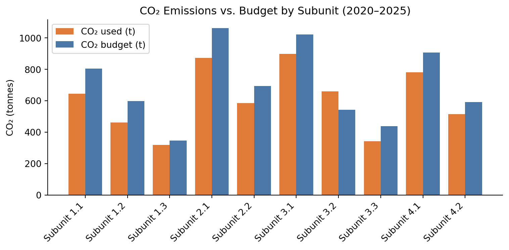
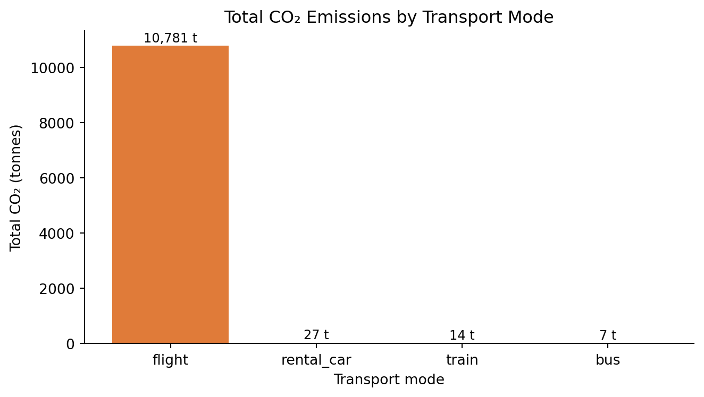
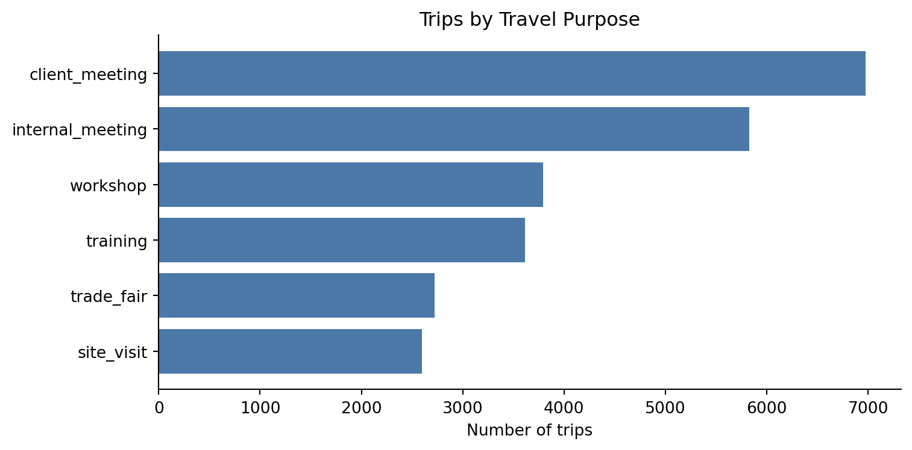
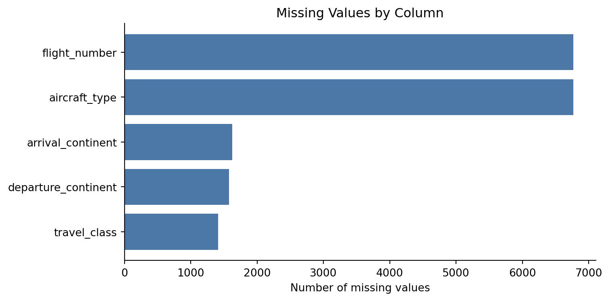

: Data catalogue for travel_data. {#tbl-data-catalogue}
The complete data catalogue for all 27 columns can be found in the ydata profiling report.
1.2.2 Data Characteristics and Quality
The following exploratory analyses were conducted to understand the data and inform the design of the dashboard visualizations. The full automated profile is available in the ydata profiling report.
1. How do CO₂ emissions develop over time?
This analysis checks whether there is a meaningful trend in emissions over the years — a key question for the cumulative CO₂ line chart in the dashboard.
Figure 1: Total CO₂ emissions per year (2017–2025).
The chart shows a clear dip in emissions around 2020–2021, which corresponds to the COVID-19 pandemic and the associated reduction in business travel. Emissions have been recovering since. This trend is meaningful and worth showing in the dashboard — it gives users important context when interpreting current emission levels. The cumulative line chart in the dashboard was designed to make this long-term pattern visible.
To extend the long-term view forward, a linear regression was fitted on post-pandemic years (2022 onwards) to project emissions for the next three years. This forms the basis of the prediction chart on the Analysis & Reports page, giving the Sustainability Manager a data-backed starting point for proposing future reduction targets.
2. Do subunits differ in CO₂ consumption vs their budget?
This analysis checks whether the subunit filter in the dashboard is actually meaningful — i.e. whether subunits behave differently from each other.
Code
import pandas as pdimport matplotlib.pyplot as pltdf = pd.read_excel("../data_acquisition/traveldata-export.xlsx", sheet_name="travel_data")budgets = pd.read_excel("../data_acquisition/traveldata-export.xlsx", sheet_name="co2_budgets")df["date"] = pd.to_datetime(df["date"])df["year"] = df["date"].dt.yeardf["CO2e RFI2.7 (t)"] = pd.to_numeric(df["CO2e RFI2.7 (t)"], errors="coerce")df["subunit"] = df["subunit"].astype(str).str.strip()budgets["subunit"] = budgets["subunit"].astype(str).str.strip()budgets["co2_budget_t"] = pd.to_numeric(budgets["co2_budget_t"], errors="coerce")co2_per_subunit = df[df["year"] >=2020].groupby("subunit")["CO2e RFI2.7 (t)"].sum().reset_index()budget_per_subunit = budgets.groupby("subunit")["co2_budget_t"].sum().reset_index()merged = co2_per_subunit.merge(budget_per_subunit, on="subunit")fig, ax = plt.subplots(figsize=(8, 4))x =range(len(merged))ax.bar([i -0.2for i in x], merged["CO2e RFI2.7 (t)"], width=0.4, label="CO₂ used (t)", color="#e07b39")ax.bar([i +0.2for i in x], merged["co2_budget_t"], width=0.4, label="CO₂ budget (t)", color="#4C78A8")ax.set_xticks(list(x))ax.set_xticklabels(merged["subunit"], rotation=45, ha="right")ax.set_ylabel("CO₂ (tonnes)")ax.set_title("CO₂ Emissions vs. Budget by Subunit (2020–2025)")ax.legend()ax.spines['top'].set_visible(False)ax.spines['right'].set_visible(False)plt.tight_layout()plt.show()

Figure 2: CO₂ emissions vs. budget by subunit (2020–2025).
Subunits differ considerably in both their total CO₂ consumption and how close they are to their budget limit. Some subunits stay well within their budget in certain years while others exceed it. This confirms that the subunit filter is a meaningful feature in the dashboard — without it, these differences would be hidden in the overall totals.
3. Which transport mode causes the most CO₂?
This analysis confirms that transport mode is a key driver of emissions and justifies its prominent role in the dashboard.
Code
import pandas as pdimport matplotlib.pyplot as pltdf = pd.read_excel("../data_acquisition/traveldata-export.xlsx", sheet_name="travel_data")df["CO2e RFI2.7 (t)"] = pd.to_numeric(df["CO2e RFI2.7 (t)"], errors="coerce")mode_co2 = df.groupby("transport_mode")["CO2e RFI2.7 (t)"].sum().sort_values(ascending=False).reset_index()colors = {"flight": "#e07b39", "train": "#4C78A8", "bus": "#72b33a", "rental_car": "#b358a0"}bar_colors = [colors.get(m, "gray") for m in mode_co2["transport_mode"]]fig, ax = plt.subplots(figsize=(7, 4))bars = ax.bar(mode_co2["transport_mode"], mode_co2["CO2e RFI2.7 (t)"], color=bar_colors)for bar, val inzip(bars, mode_co2["CO2e RFI2.7 (t)"]): ax.text(bar.get_x() + bar.get_width() /2, bar.get_height() +50,f"{val:,.0f} t", ha="center", va="bottom", fontsize=9)ax.set_xlabel("Transport mode")ax.set_ylabel("Total CO₂ (tonnes)")ax.set_title("Total CO₂ Emissions by Transport Mode")ax.spines['top'].set_visible(False)ax.spines['right'].set_visible(False)plt.tight_layout()plt.show()

Figure 3: Total CO₂ emissions by transport mode.
Flights are by far the largest contributor to CO₂ emissions and also the most frequent travel mode. This finding directly supports the dashboard design decision to highlight transport mode as a key dimension and to show flight counts separately in the KPI metrics.
4. What are the most common travel purposes?
This analysis shows the distribution of trips by travel purpose. This is relevant for the travel purpose pie chart on the Analysis & Reports page.
Code
import pandas as pdimport matplotlib.pyplot as pltdf = pd.read_excel("../data_acquisition/traveldata-export.xlsx", sheet_name="travel_data")purpose = df.groupby("travel_purpose").agg( trips=("travel_purpose", "size")).sort_values("trips", ascending=False).reset_index()fig, ax = plt.subplots(figsize=(8, 4))ax.barh(purpose["travel_purpose"], purpose["trips"], color="#4C78A8")ax.set_xlabel("Number of trips")ax.set_title("Trips by Travel Purpose")ax.invert_yaxis()ax.spines['top'].set_visible(False)ax.spines['right'].set_visible(False)plt.tight_layout()plt.show()

Figure 4: Number of trips by travel purpose.
Client Meeting and Internal Meeting are the most frequent travel purposes, together accounting for around half of all trips. This distribution is shown in the pie chart on the Analysis & Reports page.
5. How complete is the data — especially for cost?
This analysis checks for missing values, particularly in cost_CHF, since the dashboard displays travel cost figures.
Code
import pandas as pdimport matplotlib.pyplot as pltdf = pd.read_excel("../data_acquisition/traveldata-export.xlsx", sheet_name="travel_data")missing = df.isnull().sum()missing = missing[missing >0].sort_values(ascending=False)fig, ax = plt.subplots(figsize=(8, 4))ax.barh(missing.index, missing.values, color="#4C78A8")ax.set_xlabel("Number of missing values")ax.set_title("Missing Values by Column")ax.invert_yaxis()ax.spines['top'].set_visible(False)ax.spines['right'].set_visible(False)plt.tight_layout()plt.show()

Figure 5: Missing value counts per column (only columns with missing values shown).
Missing values occur mainly in flight_number and aircraft_type, which is expected since these fields only apply to flights. All columns used in the dashboard visualizations are complete.
Summary of data quality notes:
cost_CHF has missing values — cost totals in the dashboard are based on available data only
subunit values contained leading/trailing whitespace in the raw data, cleaned during loading
CO₂ budget data is only available from 2020 onwards — years 2017–2019 are excluded from budget comparisons
The COVID-19 pandemic caused a significant drop in travel in 2020–2021, visible as a dip in all time-based charts
2 Processed Data
The dashboard uses the raw data directly after the cleaning steps described above (numeric coercion, whitespace stripping, date parsing). No separate processed dataset was created. Two additional columns are derived at load time:
year — extracted from date
month — extracted from date, used for monthly trend charts
These transformations are handled in travel_insights_dashboard.py and do not modify the source Excel file.